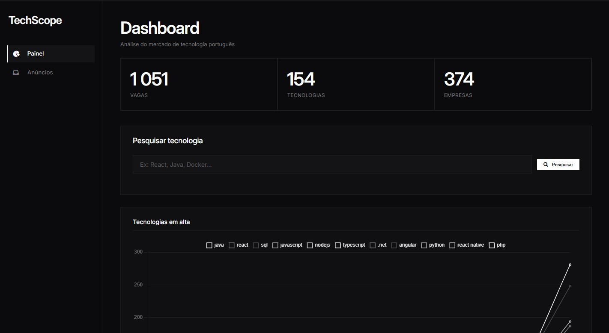
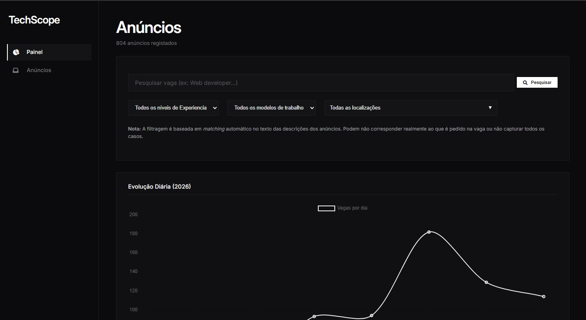
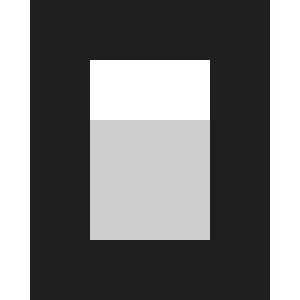

Descobre todas as tendências do mercado
Corre diariamente ou integra com o teu agente. Acompanha a evolução do mercado.

Sobre o projeto
TechScope é uma ferramenta altamente configurável que permite recolher dados diariamente do
LinkedIn
e Indeed
para identificar as linguagens, frameworks e ferramentas que as empresas realmente procuram.
Acompanha tendências e descobre oportunidades que mais ninguém descobriu.
O LinkedIn é a principal plataforma para os scrapers, não só pela sua dimensão e relevância no mercado português, mas também por disponibilizar dados adicionais que não estão presentes no Indeed, como, por exemplo, a data de publicação da vaga.
Por este motivo, o foco do desenvolvimento dos nossos scrapers foi o LinkedIn. A TechScope mantém, contudo, suporte para o Indeed, permitindo complementar os dados recolhidos e construir uma visão mais abrangente do mercado de trabalho.

Tecnologias suportadas por padrão:
e muitas mais...
Encontras-te algum bug?
Cria um issue em: TechScope/issues
Como rodar os scrapers
Recolhe dados do LinkedIn e Indeed em quatro passos.
Nota: Os scrapers NÃO são executados automaticamente por padrão. Deves executá-los diariamente para atualizar a informação da Dashboard com novos anúncios.
Instalar dependências
Antes de executar os scrapers, instala os requirements do projeto:
pip install -r requirements.txtPreparar a base de dados
Na primeira execução, os scrapers criam o schema a partir de
data-pipeline/database/migrations/001_initial.sql.
psql -U postgres -d techscope -f data-pipeline/database/migrations/001_initial.sqlArrancar o Chrome para o Indeed
Para o scraper do Indeed, corre o ficheiro:
start_chrome_debug.batIsto abre o Chrome com o perfil do projecto e a porta de debug activa.
Correr os scrapers
Executa os scrapers a partir da raiz do repositório:
# Scrapers de anúncios (listings)
python data-pipeline/scrapers/indeed.py
python data-pipeline/scrapers/linkedin.py
# Scrapers de keywords (extraem descrições e analisam conteúdo)
python data-pipeline/scrapers/indeed_keywords.py
python data-pipeline/scrapers/linkedin_keywords.py
Vais poder acompanhar o progresso do scraping pelo terminal, através de logs.
Nota: O scraper de keywords do LinkedIn (linkedin_keywords.py) precisa do Chrome debug aberto porque o LinkedIn carrega as descrições via JavaScript. É recomendado fazer login com uma conta do linkedin para evitar bugs e rate-limiting
Analisa os resultados
Abre a web app em:
http://localhost:5136/DashboardNota: A porta do localhost pode variar conforme a configuração que definiste em launchSettings.json .
Configurar e manter o projeto
Mantem os scrapers e a app a funcionar para ti e adapta-os para as tuas
necessidades.
Estes passos nao servem uma ordem específica
Adapta as queries conforme a tua necessidade
Neste momento as queries são definidas manualmente no codigo dos scrapers: "linkedin.py" e "indeed.py" . Caso queiras procurar por uma role especifica podes editar as queries. Também podes editar o max start para valores mais altos, quanto mais alto mais vagas encontras mas menos precisão tens no tipo de vaga.
Exemplo de query (linkedin.py):
QUERY = '"Software Engineer" OR "Backend Engineer" OR "Full Stack Engineer"'
TECHNOLOGY_NAME = None
LOCATION = "Portugal"
MAX_START = 200
PAGE_SIZE = 10
SOURCE = "linkedin"
Também podes editar outros parametros, como a location, que pode ser ainda mais precisa, como: "porto, porto Portugal"
Integra com o teu ai agent favorito
Agents compativeis:



A techscope oferece uma estrutura base de um AGENTS.md para que possas implementar automação na execução dos scrapers. Como os scrapers guardam logs em execution.json o teu agente facilmente verifica, a cada nova sessão, se foram executados e pergunta-te se os queres executar, caso ainda não tenham sido.
Exemplo do execution.json:
{
"l": {
"last_run": "2026-09-03T17:44:14Z",
"status": "success"
},
"i": {
"last_run": "2026-09-03T17:47:07Z",
"status": "error"
}
}
Transfere e experimenta agora o AGENTS.md personalizado:
AGENTS.md
Nota: Deves alterar : 'SET THE FULL PATH TO THE TECHSCOPE DIRECTORY HERE' para o diretório onde instalas-te a techscope.
Exemplo: USER: "C:\Users\Utilizador\CODE\TechScope"